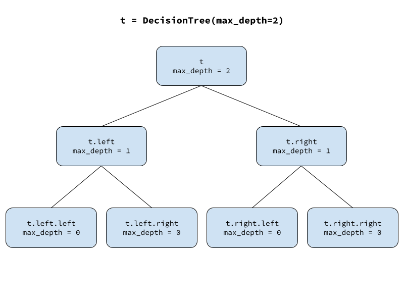

import math
import numpy as np
import pandas as pd
import matplotlib.pyplot as pltDecision Tree From Scratch
gradient boosting
from scratch
A detailed walkthrough of my from-scratch decision tree implementation in python.
Yesterday we had a lovely discussion about the key strengths and weaknesses of decision trees and why tree ensembles are so great. But today, gentle reader, we abandon our philosophizing and get down to the business of implementing one of these decision trees from scratch.
A note before we get started. This is going to be the most involved scratch-build that we’ve done at Random Realizations so far. It is not the kind of algorithm that I could just sit down and write all at once. We need to start with a basic frame and then add functionality step by step, testing all along the way to make sure things are working properly. Since I’m writing this in a jupyter notebook, I’ll try to give you a sense for how I actually put the algorithm together interactively in pieces, eventually landing on a fully-functional final product.
Shall we?
Binary Tree Data Structure
A decision tree takes a dataset with features and a target, partitions the feature space into chunks, and assigns a prediction value to each chunk. Since each partitioning step divides one chunk in two, and since the partitioning is done recursively, it’s natural to use a binary tree data structure to represent a decision tree.
The basic idea of the binary tree is that we define a class to represent nodes in the tree. If we want to add children to a given node, we simply assign them as attributes of the parent node. The child nodes we add are themselves instances of the same class, so we can add children to them in the same way.
Let’s start out with a simple class for our decision tree. It takes a single value called max_depth as input, which will dictate how many layers of child nodes should be inserted below the root. This controls the depth of the tree. As long as max_depth is positive, the parent will instantiate two new instances of the binary tree node class, passing along max_depth decremented by one and attaching the two children to itself as attributes called left and right.
class DecisionTree():
def __init__(self, max_depth):
assert max_depth >= 0, 'max_depth must be nonnegative'
self.max_depth = max_depth
if max_depth > 0:
self.left = DecisionTree(max_depth=max_depth-1)
self.right = DecisionTree(max_depth=max_depth-1)Let’s make a new instance of our decision tree class, a tree with depth 2.
t = DecisionTree(max_depth=2)
We can access individual nodes and check their value of max_depth.
t.max_depth, t.left.max_depth, t.left.right.max_depth(2, 1, 0)Our full decision tree can expand on this idea where each node receives some input, modifies it, creates two child nodes, and passes the modified input along to them. Specifically, each node in our decision tree will receive a dataset, determine how best to split the dataset into two parts, create two child nodes, and pass one part of the data to the left child and the other part to the right child.
All we have to do now is add some additional functionality to our decision tree. First we’ll start by capturing all the inputs we need to grow a tree, which include the feature dataframe X, the target array y, max_depth to explicitly limit tree depth, min_samples_leaf to specify the minimum number of observations that are allowed in a leaf node, and an optional idxs which specifies the indices of data that the node should use. The indices argument is useful for users of our decision tree because it will allow them to implement row subsampling in ensemble methods like random forest. It will also be handy for internal use inside the decision tree when passing data along to child nodes; instead of passing copies of the two data subsets, we’ll just pass a reference to the full dataset and pass along a set of indices to identify that node’s instance subset.
Once we get our input, we’ll do a little bit of input validation and store things that we want to keep as object attributes. In case this is a leaf node, we’ll go ahead and compute its predicted value; since this is a regression tree, the prediction is just the mean of the target y. We’ll also go ahead and initialize a score metric which we’ll use to help us find the best split later; since lower scores are going to be better, we’ll initialize it to positive infinity. Finally, we’ll push the logic to add child nodes into a method called _maybe_insert_child_nodes that we’ll define next.
Note
a leading underscore in a method name indicates the method is for internal use and not part of the user-facing API of the class.
class DecisionTree():
def __init__(self, X, y, min_samples_leaf=5, max_depth=6, idxs=None):
assert max_depth >= 0, 'max_depth must be nonnegative'
assert min_samples_leaf > 0, 'min_samples_leaf must be positive'
self.min_samples_leaf, self.max_depth = min_samples_leaf, max_depth
if isinstance(y, pd.Series): y = y.values
if idxs is None: idxs = np.arange(len(y))
self.X, self.y, self.idxs = X, y, idxs
self.n, self.c = len(idxs), X.shape[1]
self.value = np.mean(y[idxs]) # node's prediction value
self.best_score_so_far = float('inf') # initial loss before split finding
if self.max_depth > 0:
self._maybe_insert_child_nodes()
def _maybe_insert_child_nodes(self):
passNow in order to test our class, we’ll need some actual data. We can use the same scikit-learn diabetes data from the last post.
from sklearn.datasets import load_diabetes
X, y = load_diabetes(as_frame=True, return_X_y=True)t = DecisionTree(X, y, min_samples_leaf=5, max_depth=5)So far, so good.
Inserting Child Nodes
Our node inserting function _maybe_insert_child_nodes needs to first find the best split; then if a valid split exists, it needs to insert the child nodes. To find the best valid split, we need to loop through the columns and search each one for the best valid split. Again we’ll push the logic of finding the best split into a function that we’ll define later. Next if no split was found, we need to bail by returning before trying to insert the child nodes. To check if this node is a leaf (i.e. it shouldn’t have child nodes), we define a property called is_leaf which will just check if the best score so far is still infinity, in which case no split was found and the node is a leaf.
If a valid split was found, then we need to insert the child nodes. We’ll assume that our split finding function assigned attributes called split_feature_idx and threshold to tell us the split feature’s index and the split threshold value. We then use these to compute the indices of the data to be passed to the child nodes; the left child gets instances where the split feature value is less than or equal to the threshold, and the right child node gets instances where the split feature value is greater than the threshold. Then we create two new decision trees, passing the corresponding data indices to each and assigning them to the left and right attributes of the current node.
def _maybe_insert_child_nodes(self):
for j in range(self.c):
self._find_better_split(j)
if self.is_leaf: # do not insert children
return
x = self.X.values[self.idxs,self.split_feature_idx]
left_idx = np.nonzero(x <= self.threshold)[0]
right_idx = np.nonzero(x > self.threshold)[0]
self.left = DecisionTree(self.X, self.y, self.min_samples_leaf,
self.max_depth - 1, self.idxs[left_idx])
self.right = DecisionTree(self.X, self.y, self.min_samples_leaf,
self.max_depth - 1, self.idxs[right_idx])
def _find_better_split(self, feature_idx):
pass
@property
def is_leaf(self): return self.best_score_so_far == float('inf')To test these new methods , we can assign them to our DecisionTree class and create a new class instance to make sure things are still working.
DecisionTree._maybe_insert_child_nodes = _maybe_insert_child_nodes
DecisionTree._find_better_split = _find_better_split
DecisionTree.is_leaf = is_leaf
t = DecisionTree(X, y, min_samples_leaf=5, max_depth=6)Yep, we’re still looking good.
Split Finding
Now we need to fill in the functionality of the split finding method. The overall strategy is to consider every possible way to split on the current feature, measuring the quality of each potential split with some scoring mechanism, and keeping track of the best split we’ve seen so far. We’ll come back to the issue of how to try all the possible splits in a moment, but let’s start by figuring out how to score a particular potential split.
Like other machine learning models, trees are trained by attempting to minimize some loss function that measures how well the model predicts the target data. We’ll be training our regression tree to minimize squared error.
\[ L = \sum_{i=1}^n (y_i-\hat{y}_i)^2\]
For a given node, we can replace \(\hat{y}\) with \(\bar{y}\) because each node uses the sample mean of its target instances as its prediction. We can then rewrite the loss for a given node as
\[ L = \sum_{i=1}^n(y_i - \bar{y})^2 \] \[ = \sum_{i=1}^n(y_i^2 -2y_i\bar{y} + \bar{y}^2) \] \[ = \sum_{i=1}^ny_i^2 -2\bar{y}\sum_{i=1}^ny_i + n\bar{y}^2 \] \[ = \sum_{i=1}^ny_i^2 - \frac{1}{n} \left ( \sum_{i=1}^ny_i \right )^2 \]
We can then evaluate potential splits by comparing the loss after splitting to the loss before splitting, where the split with the greatest loss reduction is best. Let’s work out a simple expression for the loss reduction from a given split.
Let \(I\) be the set of \(n\) data instances in the current node, and let \(I_L\) and \(I_R\) be the instances that fall into the left and right child nodes of a proposed split. Let \(L\) be the total loss for all instances in the node, while \(L_L\) and \(L_R\) are the losses for the left and right child nodes. The total loss contributed by instances in \(I\) prior to any split is
\[L_{\text{before split}} = L = \sum_{i \in I} y_i^2 - \frac{1}{n} \left ( \sum_{i \in I} y_i \right )^2 \]
And the loss after splitting \(I\) into \(I_L\) and \(I_R\) is
\[L_{\text{after split}} = L_L + L_R = \sum_{i \in I_L} y_i^2 - \frac{1}{n_L} \left ( \sum_{i \in I_L} y_i \right )^2 + \sum_{i \in I_R} y_i^2 - \frac{1}{n_R} \left ( \sum_{i \in I_R} y_i \right )^2 \]
The reduction in loss from this split is
\[ \Delta L = L_{\text{after split}} - L_{\text{before split}} = (L_L + L_R) - L \] \[ = \sum_{i \in I_L} y_i^2 - \frac{1}{n_L} \left ( \sum_{i \in I_L} y_i \right )^2 + \sum_{i \in I_R} y_i^2 - \frac{1}{n_R} \left ( \sum_{i \in I_R} y_i \right )^2 - \left ( \sum_{i \in I} y_i^2 - \frac{1}{n} \left ( \sum_{i \in I} y_i \right )^2 \right ) \]
Since \(I = I_L \cup I_R\) the \(\sum y^2\) terms cancel and we can simplify.
\[ \Delta L = - \frac{1}{n_L} \left ( \sum_{i \in I_L} y_i \right )^2 - \frac{1}{n_R} \left ( \sum_{i \in I_R} y_i \right )^2 + \frac{1}{n} \left ( \sum_{i \in I} y_i \right )^2 \]
This is a really nice formulation of the split scoring metric from a computational complexity perspective. We can sort the data by the feature values then, starting with the smallest min_samples_leaf instances in the left node and the rest in the right node, we check the score. Then to check the next split, we simply move a single target value from the right node into the left node, updating the score by subtracting it from the right node’s partial sum and adding it to the left node’s partial sum. The third term is constant for all splits, so we only need to compute it once. If any split’s score is lower than the best score so far, then we update the best score so far, the split feature, and the threshold value. When we’re done we can be sure we found the best possible split. The time bottleneck is the sort, which puts us at an average time complexity of \(O(n\log n)\).
def _find_better_split(self, feature_idx):
x = self.X.values[self.idxs,feature_idx]
y = self.y[self.idxs]
sort_idx = np.argsort(x)
sort_y, sort_x = y[sort_idx], x[sort_idx]
sum_y, n = y.sum(), len(y)
sum_y_right, n_right = sum_y, n
sum_y_left, n_left = 0., 0
for i in range(0, self.n - self.min_samples_leaf):
y_i, x_i, x_i_next = sort_y[i], sort_x[i], sort_x[i + 1]
sum_y_left += y_i; sum_y_right -= y_i
n_left += 1; n_right -= 1
if n_left < self.min_samples_leaf or x_i == x_i_next:
continue
score = - sum_y_left**2 / n_left - sum_y_right**2 / n_right + sum_y**2 / n
if score < self.best_score_so_far:
self.best_score_so_far = score
self.split_feature_idx = feature_idx
self.threshold = (x_i + x_i_next) / 2Again, we assign the split finding method to our class and instantiate a new tree to make sure things are still working.
DecisionTree._find_better_split = _find_better_split
t = DecisionTree(X, y, min_samples_leaf=5, max_depth=6)
X.columns[t.split_feature_idx], t.threshold('s5', -0.0037611760063045703)Nice! Looks like the tree started with a split on the s5 feature.
Inspecting the Tree
While we’re developing something complex like a decision tree class, we need a good way to inspect the object to help with testing and debugging. Let’s write a quick string representation method to make it easier to check what’s going on with a particular node.
def __repr__(self):
s = f'n: {self.n}'
s += f'; value:{self.value:0.2f}'
if not self.is_leaf:
split_feature_name = self.X.columns[self.split_feature_idx]
s += f'; split: {split_feature_name} <= {self.threshold:0.3f}'
return sWe can assign the string representation method to the class and print a few nodes.
DecisionTree.__repr__ = __repr__
t = DecisionTree(X, y, min_samples_leaf=5, max_depth=2)
print(t)
print(t.left)
print(t.left.left)n: 442; value:152.13; split: s5 <= -0.004
n: 218; value:109.99; split: bmi <= 0.006
n: 171; value:96.31Prediction
We need a public predict method that takes a feature dataframe and returns an array of predictions. We’ll need to look up the predicted value for one instance at a time and stitch them together in an array. We can do that by iterating over the feature dataframe rows with a list comprehension that calls a _predict_row method to grab the prediction for each row. The row predict method needs to return the current node’s predicted value if it’s a leaf, or if not, it needs to identify the appropriate child node based on its split and ask it for a prediction.
def predict(self, X):
return np.array([self._predict_row(row) for i, row in X.iterrows()])
def _predict_row(self, row):
if self.is_leaf:
return self.value
child = self.left if row[self.split_feature_idx] <= self.threshold \
else self.right
return child._predict_row(row)Let’s assign the predict methods and make predictions on a few rows.
DecisionTree.predict = predict
DecisionTree._predict_row = _predict_row
t.predict(X.iloc[:3, :])array([225.87962963, 96.30994152, 225.87962963])The Complete Decision Tree Implementation
Here’s the implementation, all in one place.
class DecisionTree():
def __init__(self, X, y, min_samples_leaf=5, max_depth=6, idxs=None):
assert max_depth >= 0, 'max_depth must be nonnegative'
assert min_samples_leaf > 0, 'min_samples_leaf must be positive'
self.min_samples_leaf, self.max_depth = min_samples_leaf, max_depth
if isinstance(y, pd.Series): y = y.values
if idxs is None: idxs = np.arange(len(y))
self.X, self.y, self.idxs = X, y, idxs
self.n, self.c = len(idxs), X.shape[1]
self.value = np.mean(y[idxs]) # node's prediction value
self.best_score_so_far = float('inf') # initial loss before split finding
if self.max_depth > 0:
self._maybe_insert_child_nodes()
def _maybe_insert_child_nodes(self):
for j in range(self.c):
self._find_better_split(j)
if self.is_leaf: # do not insert children
return
x = self.X.values[self.idxs,self.split_feature_idx]
left_idx = np.nonzero(x <= self.threshold)[0]
right_idx = np.nonzero(x > self.threshold)[0]
self.left = DecisionTree(self.X, self.y, self.min_samples_leaf,
self.max_depth - 1, self.idxs[left_idx])
self.right = DecisionTree(self.X, self.y, self.min_samples_leaf,
self.max_depth - 1, self.idxs[right_idx])
@property
def is_leaf(self): return self.best_score_so_far == float('inf')
def _find_better_split(self, feature_idx):
x = self.X.values[self.idxs,feature_idx]
y = self.y[self.idxs]
sort_idx = np.argsort(x)
sort_y, sort_x = y[sort_idx], x[sort_idx]
sum_y, n = y.sum(), len(y)
sum_y_right, n_right = sum_y, n
sum_y_left, n_left = 0., 0
for i in range(0, self.n - self.min_samples_leaf):
y_i, x_i, x_i_next = sort_y[i], sort_x[i], sort_x[i + 1]
sum_y_left += y_i; sum_y_right -= y_i
n_left += 1; n_right -= 1
if n_left < self.min_samples_leaf or x_i == x_i_next:
continue
score = - sum_y_left**2 / n_left - sum_y_right**2 / n_right + sum_y**2 / n
if score < self.best_score_so_far:
self.best_score_so_far = score
self.split_feature_idx = feature_idx
self.threshold = (x_i + x_i_next) / 2
def __repr__(self):
s = f'n: {self.n}'
s += f'; value:{self.value:0.2f}'
if not self.is_leaf:
split_feature_name = self.X.columns[self.split_feature_idx]
s += f'; split: {split_feature_name} <= {self.threshold:0.3f}'
return s
def predict(self, X):
return np.array([self._predict_row(row) for i, row in X.iterrows()])
def _predict_row(self, row):
if self.is_leaf:
return self.value
child = self.left if row[self.split_feature_idx] <= self.threshold \
else self.right
return child._predict_row(row)From Scratch versus Scikit-Learn
As usual, we’ll test our homegrown handiwork by comparing it to the existing implementation in scikit-learn. First let’s train both models on the California Housing dataset which gives us 20k instances and 8 features to predict median house price by district.
from sklearn.datasets import fetch_california_housing
from sklearn.model_selection import train_test_split
X, y = fetch_california_housing(as_frame=True, return_X_y=True)
X_train, X_test, y_train, y_test = train_test_split(X, y, test_size=0.3, random_state=43)from sklearn.tree import DecisionTreeRegressor
from sklearn.metrics import mean_squared_error
max_depth = 8
min_samples_leaf = 16
tree = DecisionTree(X_train, y_train, max_depth=max_depth, min_samples_leaf=min_samples_leaf)
pred = tree.predict(X_test)
sk_tree = DecisionTreeRegressor(max_depth=max_depth, min_samples_leaf=min_samples_leaf)
sk_tree.fit(X_train, y_train)
sk_pred = sk_tree.predict(X_test)
print(f'from scratch MSE: {mean_squared_error(y_test, pred):0.4f}')
print(f'scikit-learn MSE: {mean_squared_error(y_test, sk_pred):0.4f}')from scratch MSE: 0.3988
scikit-learn MSE: 0.3988We get similar accuracy on a held-out test dataset.
Let’s benchmark the two implementations on training time.
%%time
sk_tree = DecisionTreeRegressor(max_depth=max_depth, min_samples_leaf=min_samples_leaf)
sk_tree.fit(X_train, y_train);CPU times: user 45.3 ms, sys: 555 µs, total: 45.8 ms
Wall time: 45.3 msDecisionTreeRegressor(max_depth=8, min_samples_leaf=16)In a Jupyter environment, please rerun this cell to show the HTML representation or trust the notebook.
On GitHub, the HTML representation is unable to render, please try loading this page with nbviewer.org.
DecisionTreeRegressor(max_depth=8, min_samples_leaf=16)
%%time
tree = DecisionTree(X_train, y_train, max_depth=max_depth, min_samples_leaf=min_samples_leaf)CPU times: user 624 ms, sys: 1.65 ms, total: 625 ms
Wall time: 625 msWow, the scikit-learn implementation absolutely smoked us, training an order of magnitude faster. This is to be expected, since they implement split finding in cython, which generates compiled C code that can run much faster than our native python code. Maybe we can take a look at how to optimize python code with cython here on the blog one of these days.
Wrapping Up
Holy cow, we just implemented a decision tree using nothing but numpy. I hope you enjoyed the scratch build as much as I did, and I hope you got a little bit better at coding (I certainly did). That was actually way harder than I expected, but looking back at the finished product, it doesn’t seem so bad right? I almost thought we were going to get away with not implementing our own decision tree, but it turns out that this will be super helpful for us when it comes time to implement XGBoost from scratch.
References
This implementation is inspired and partially adapted from Jeremy Howard’s live coding of a Random Forest as part of the fastai ML course.